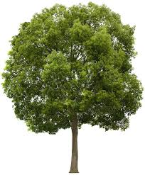

Vegaroo
Calculating Environmental Impact
But every human can still make a difference
What's the biggest way to reduce my carbon footprint?
In gigatons of C02
- Hybrid Car
- Not Eating Beef
- Solar Panels
- Eating Vegetarian
- Eating Vegan
- 1.0
- 1.4
- 1.4
- 1.6
- 1.8
Reducing the consumption of animal products!
Animal Products require vast amounts of natural resources and is the leading cause of ecosystem destruction.
More than 20 football stadiums worth of rainforest are destroyed every minute
Trees both trap Carbon Dioxide and create Oxygen, doubling the impact of their destruction.

+
Nitrogen-based fertilizers
=
Nitrogen-based fertilizers
=
A 13,000 Square KM deadzone in the Gulf of Mexico


Foregoing 1 kilogram of beef would save as much water as not showering for 4 months
Vegaroo calculates the environmental impact of your food choices and makes it easier to eat a more eco-conscious diet.
Ready to get started?
Ready to get started?